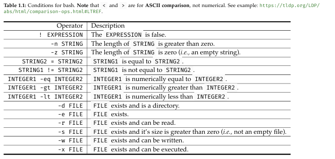
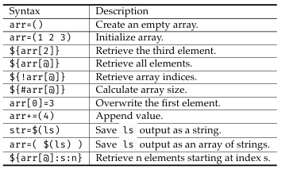

1.1 File Organization
All files are in a tree structure in Linux where / is the root directory.
There are special directories under the root, some are listed below.
/bin: Contains only binaries(executables) needed for system use.
/dev: Some physical or logical device(ex: drivers), these files are never run like other programs, but are read and write from like text files.
/home: Linux systems can have multiple users, each user has a specific folder under /home calleed their home directory
/root: NOT TO BE CONFUSED WITH ROOT DIRECTORY, In a Linux system there is a superuser who can do certain things other users can't, this is the home directory of the superuser.
When opening the terminal, you automatically start at the home directory /home/exampleusername, this is shortened to a ~, and the cd command can be used to go to other directories.
Relative Path: The path relative to where you are in the Linux system. Note that .. is to go back a path in Linux.
Absolute Path: The path that always starts from the root directory.
pwd prints out the current directory or working directory
ls lists all files under the specified directory
tree shows the tree structure of the file hierarchy
cat prints the file content of a file to the terminal
wc shows the number of lines, words, and bytes for the file it is ran on.
mkdir allows you to make a directory by specifying the new directory's name or path
touch makes an empty file
rm deletes a file, to delete a directory one must add the recursive flag which is -r after
There is no recycle bin in Linux.
If you want to be super evil (please don't, I don't wanna be paranoid when I leave my laptop unattended), run rm -rf / which will delete the root directory, therefore deleting EVERYTHING off a Linux system.
1.2 Environment Variables
/bin stores all executables, commands such as the ones listed in the previous chapters are all executables stored in /bin, so ls causes the terminal to run the executable /bin/ls aka /usr/bin/ls.
The shell knows where these executables are due variables which point to the correct location called environment variables.
env prints out the environment variables, each one follows the format of NAME=value1:value2:value3, if there is only 1 value, then there are no :.
To find an individual variable use echo $NAME which will print the values before the variable.
1.3 Special Characters
3 standard streams, each is referred to by an integer
stdin for user input, is referred to by a 0
stdout for printing to the terminal output, is referred to by a 1
stderr for printing error messages to the terminal output, is referred to by a 2
Regular output and error output is separated for logging purposes.
To redirect an output from terminal to a file, use the redirection operator > to print to a specific file. > overwrites the file, >> is to append to the file.
Examples
$ echo hello world (print to terminal)
$ echo hello world > temp.txt (print to file, overwrite)
$ echo hello world >> temp.txt (print to file, append)
There is also a special file called /dev/null where outputs will just disappear. By redirecting to this file you can remove an output if you don't care for it.
Using redirection by default only redirects stdout, stderr will still show up on the terminal. To redirect stderr use 2> instead of > since 2 stands for stderr.
Because stderr and stdout look identical on the terminal, redirecting stderr or stdout to another file is helpful.
To merge stderr and stoud you can do 2>&1.
Example: $ ((echo "what the shell?" >&2); echo "392") > log.txt 2>&1 What this command does is to echo "what the shell?" first through stderr, and then "392" through stdout. It redirects the output to log.txt but also merges stdout and stderr so the file contains both strings.
The pipe operator | allows us to send data from one program to another.
Example: $ prog1 | prog2 | prog3 | .... prog1 stdout is used as stdin for prog2, prog2 stdout is used as stdin for prog3, and so on.
wc when it has no file name input, will use stdin as an input, so running $ ls | wc -w where the -w flag specifies to only print the number of words. This will give us the amount of files in a directory.
Pipe operators can be combined with redirection.
1.4 Bash Script
The type of terminal we will be studying is the bash terminal. Bash = Bourne Again Shell There are different types of terminals with different functionalities.
A command is just a single line, a bash script is multiple commands, think python in cs115 when we started the first lecture with typing to the shell.
Example Script
#!/bin/bash
# hello.sh
echo "Hello World!"
First line is always required, second line is a comment, third line is the command. All bash scripts are executable binaries, hence why they are under bin.
$ allows to evaluate the value assigned to a variable, first echo will print STR, second will print Hello World!
Adding readonly before a variable declaration makes it readonly.
#!/bin/bash
# variable.sh
STR="Hello World!"
readonly ABC="XYZ"
echo STR
echo $STR
Commands have return values. To access the return value of a command use the syntax $( command ).
Multiple commands would be written as $(command1; command2; ...; command_N), where command_N's return value is the one returned to the script.
Bash scripts can only do integer calculations. For floats you have to use utilities like bc. Calculating a number is very similar to return values except with double parenthesis instead of single parenthesis. Example: $(( math-expression ))
This example will print out 2000
arg1=20
arg2=10
vol=$(( 10 * $arg1 * $arg2 ))
echo $vol
Conditionals are written as, and the conditions are in the table attached
if [[ Condition_1 ]]; then
# If condition_1 is TRUE
elif [[ Condition_2 ]]; then
# If condition_1 is FALSE and condition_2 is TRUE
else
# If both condition_1 and condition_2 are FALSE
fi
Arrays are written as
#!/bin/bash
# array.sh
# Method 1:
declare-a array
array[0]="hi"
array[1]="bye"
# Method 2
newarray=(1 2 "three" 4 "five")
Common array operations are found in the table attached.
 Bash has for, while, and until loops, but only for is here since it is the most commonly used.
For loops are written as
#!/bin/bash
# array_loop.sh
array=(1 2 "three" 4 "five")
# Iterating over indices
for i in ${!array[@]}; do
echo "[${i}]: ${array[$i]}"
done
# Iterating over elements
for elem in ${array[@]}; do
echo ${elem}
done
# Iterating for a specific number
for i in {0..10}; do
echo "[${i}]: ${array[$i]}"
done
For loops in bash are inclusive, for i in {a..b} will iterate from a to exactly b. The two dots are also required, and it is called expansion.
You can also put letters in a for loop. Letters will iterate in ASCII order (uppercase is before lowercase). You cannot mix letters and numbers in a for loop, it is either only letters or only numbers.
Functions are written and called as
#!/bin/bash
# function.sh
height=3
function volume {
# vol is a local variable
vol=$(( $height * $1 * $2 ))
echo $vol
}
volume 10 20
result=$(volume 10 20)
echo "Result: $result"
When passing parameters to a function, you pass them when calling the function in order such that $1 refers to the first parameter, $2 refers to the second parameter, and so on.
The read command works similarly to input from Python. It waits for the user to enter an input. It is written as
#!/bin/bash
# read.sh
read input
echo "Result: ${input}"
To redirect inputs to come from a file, use <. It will cause the script to not wait for the user input, since it will come from the file listed. An example of running read.sh with input redirection will look like below
$ ./read.sh < random.txt.
The << operator is different from >> (append output) operator. << is to create a heredoc or Here document.
It allows you to create a temporary file for testing commands which use a file. Ex: the cat command.
The syntax for writing a heredoc is, where DELIMETER is any string, typically EOF or END. While HERE-DOCUMENT contains multiple lines that will be fed into the command.
COMMAND << DELIMITER
HERE-DOCUMENT
DELIMITER
After running cat << EOF, you can write the content of the file, and then type EOF or whichever delimiter you choose.
This allows you to run commands or scripts that require file inputs without actually having a file. Below is an example of how a heredoc would look in a bashscript.
#!/bin/bash
# here.sh
cat << EOF
The current working directory is: $(pwd)
You are logged in as: $(whoami)
EOF
Heredoc can be used to print out longer messages to the user.
Positional Arguments refer to those which don't have any flags. In the example $ ./test.sh hello world whats up, hello, world, whats, and up are the 4 positional arguments.
These can be used in a script by using the $ in a similar style as described when writing functions.
$# will get the number of arguments, not including the command itself.
arguments are numbered starting from 1
Here is an example of a loop being used to print all of the arguments.
echo "There are $# arguments:"
for word in "$@"; do
echo "$word";
done
Flags are essentially extra options for commands. Ex: -l to ls to show the files in a long format, or +x to chmod to make the file an executable.
getopts allows us to process SHORT flags. getopt, which has no s is used for LONG flags.
Short flag examples: -2, -d, -D, -2dD. Note that -2dD is not one flag, but a combination of 3 short ones.
Long flag examples:
--verbose, --help.
Since getopts only processes one option at a time, it is best to use getopts in a loop with a structure such as below.
while getopts "<option-list>" <option-variable>; do
case "${<option-variable>}" in
<option-1>)
# Process for option 1
;;
<option-2>)
# Process for option 2
;;
*)
# If none of the above
;;
esac
done
<option-list> is a list of all acceptable letters as flags. Ex: If a program only accepts -n, -p, and -i, then the list should be npi.
Some flags need an argument, ex: in ./demo.sh -n josh, josh is an argument of -n. If a flag needs an argument, it needs a : after the letter. The list example above would be n:pi.
If a flag has an invalid or no argument, the script will automatically print an error message. To hide the error message for a flag, put a colon infront of the flag in the option list. The example would become :n:pi.
<option-variable> is a variable which represents the flag recieved in that iteration, which will then be used in the switch case in the loop.
<option-x> is where you put each flag, and then write what to do with the flag where the comment is in the code above. If a flag uses an argument, get the argument by using ${OPTARG}.
* represents any flag that is not in the option list, or is missing an argument if one is required.
A good practice is to set variables, then process flags, then the rest of your script, and to end with exit 1 when there are errors. The script will automatically exit 0 at the end once it is finished so there is no need to include it.
Attached is bash script example which uses a lot of what is learned in this chapter and has good practice.
#!/bin/bash
# demo_getopts.sh
print=0
name=""
repeat=1
while getopts "n:pi:" options; do
case "${options}" in
n) name=${OPTARG}
;;
p) print=1
;;
i) repeat=${OPTARG}
;;
*) echo "Oops" >&2
exit 1
esac
done
if [[ $name = "" || $print-eq 0 || $repeat-lt 1 ]]; then
echo "Bad arguments." >&2
exit 1
fi
if [[ print-eq 1 ]]; then
msg="omg ${name} h"
fi
for i in $(seq $repeat); do
msg="${msg}i"
done
echo $msg